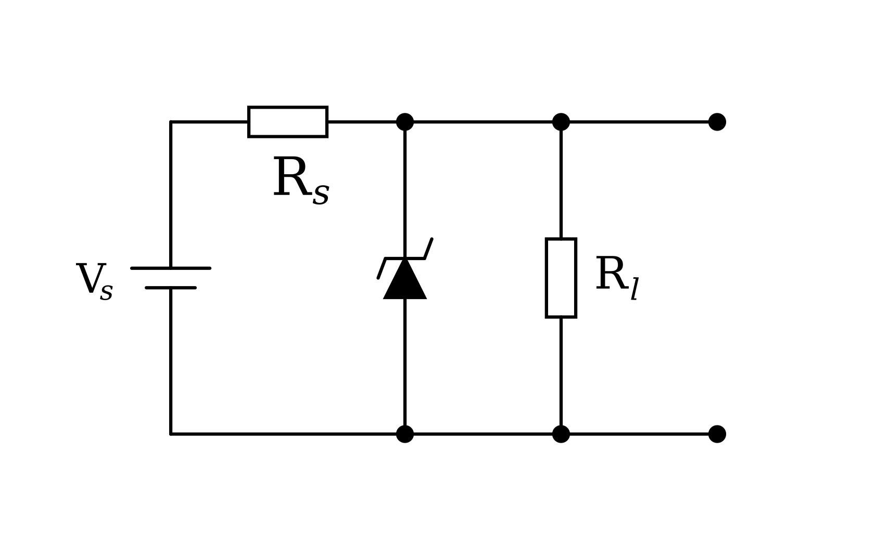
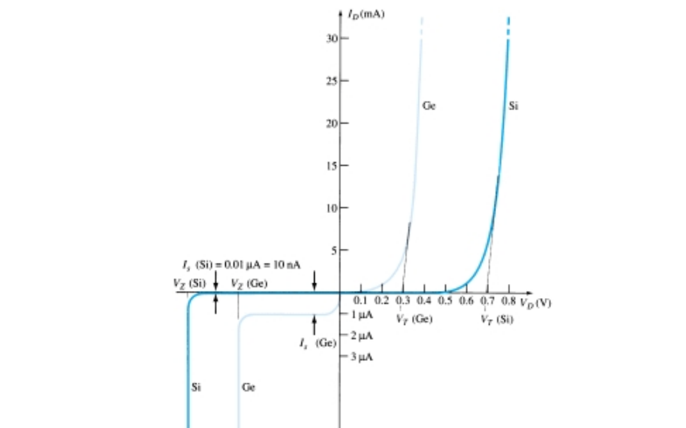
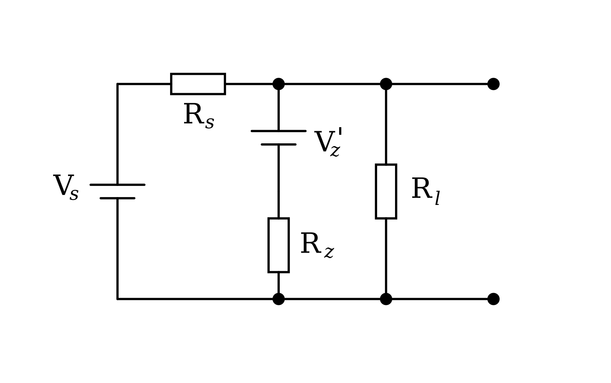
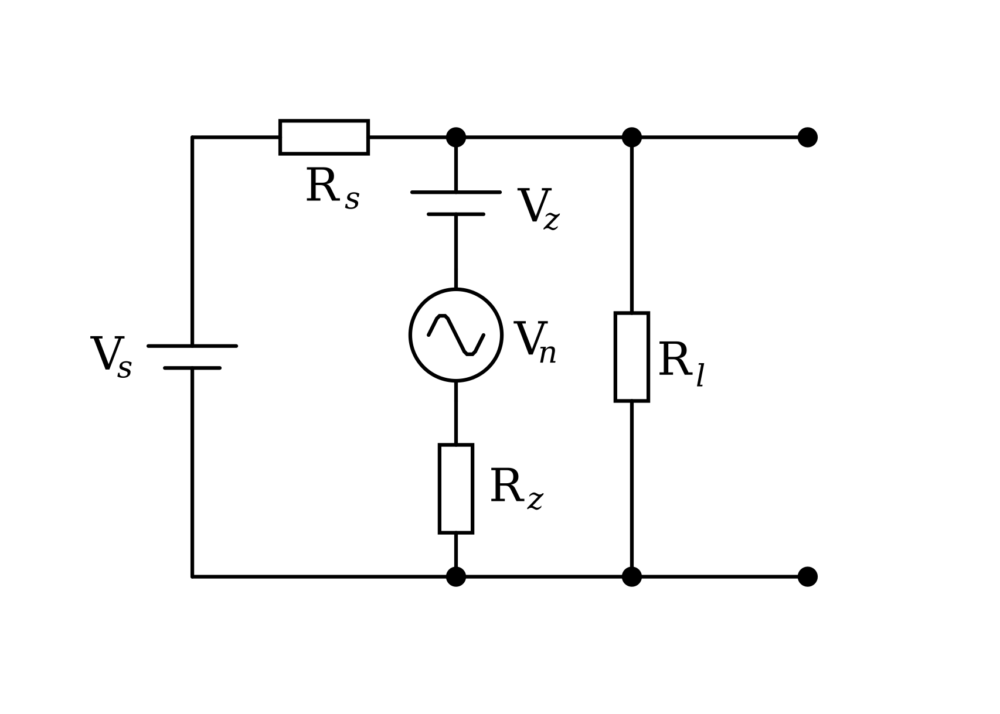
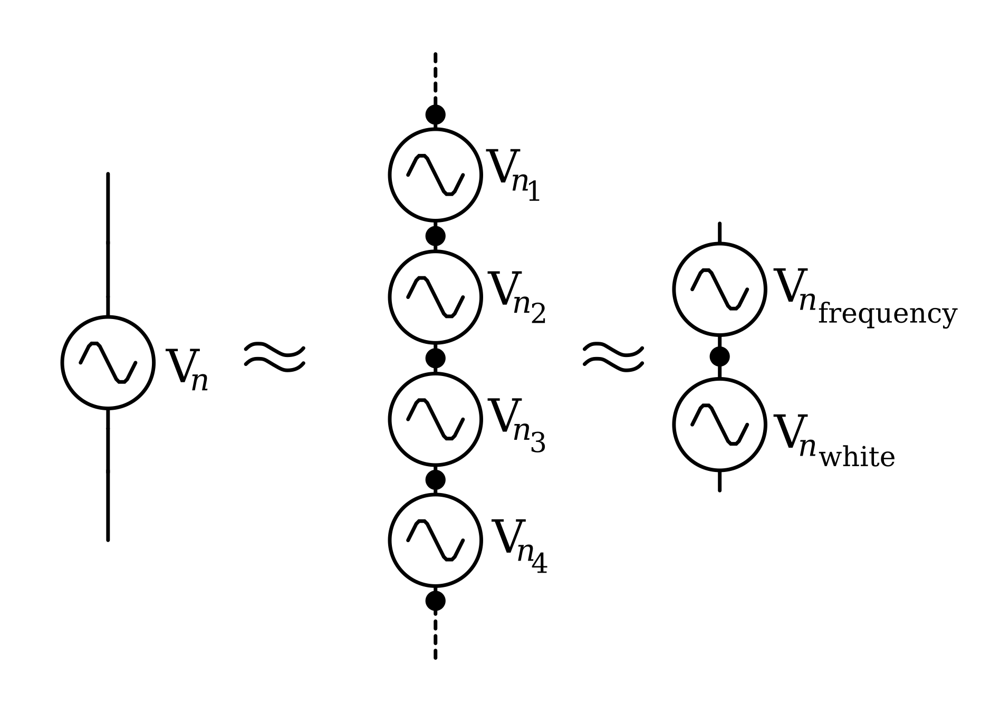
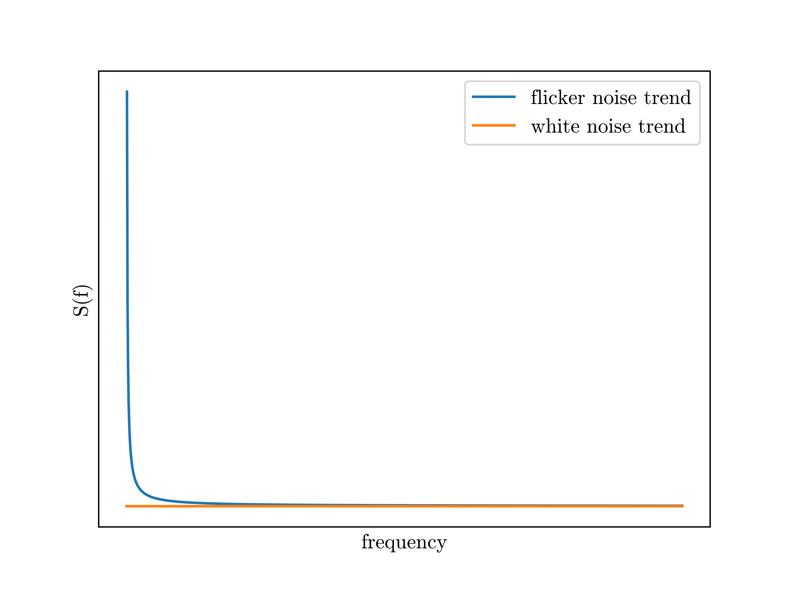
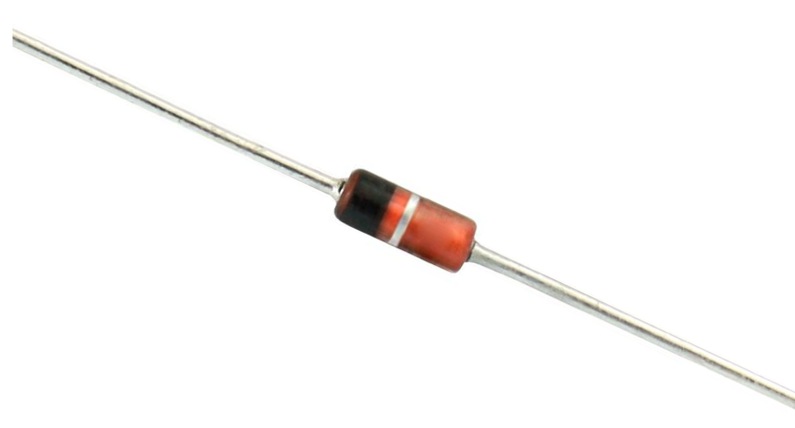
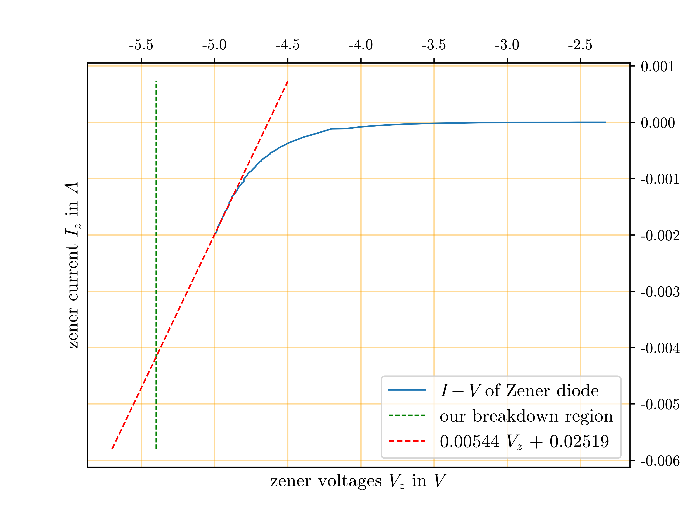
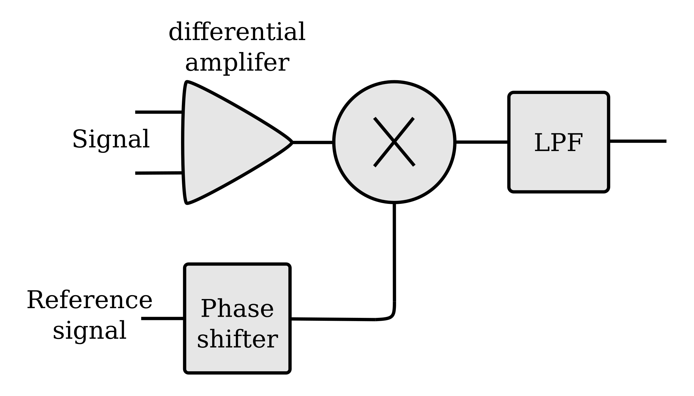

Abstract
We present a noise analysis of regulated power supplies. Basic zener diode regulated power supply is employed. We studied noise characteristics at very low frequency (sub hertz), low frequency(up to 10k) and relatively high frequency (up to 100k). All this analysis is made from the LOCK IN amplifier which gives us direct frequency domain information about the device. For our purpose we used SR830 which is relatively low noise compared to our noise signal and can measure up to 10nV/Hz. We looked for traces of frequency dependent noise like flicker noise and white noise like shot noise, avalanche noise and thermal noise. We used a specific zener diode specifically BZX55C5V1 in the voltage regulator, which means exact results can be varied to different zener diodes but it should follow a similar trend. Our work in interfacing with the LOCK IN amplifier led to a new python package called pyinstro, which was intended as stream lined for laboratory instrument controlling and handling. We tried to make it as flexible and extensible as possible. This library is made as open source and supports every SCPI supported interface like GPIB, RS232, USB and LAN. This project is done as our semester project.Introduction
Regulated power sources are extremely important in day to day lab work. Zener diodes and passive elements share an integral part of the overall circuit of regulated power supply. When we are dealing with precision measurement and study we need the most precise power sources to work with but because of 'Noise' of components of zener diodes and passive elements it inherits noise internally. Since, this noise will be infested in precision work we are doing in the lab. It is better to study the known structure of noise in these devices to address methodic treatment to our data and circuits. With all this in mind we are doing noise measurement and studying the noise spectrum of the zener diode.
For this semester we had radical plans to try but it evolved into more mature or downgraded in a way. First tried as shot noise to generate a random number generator which could possibly be a true random generator with little transformations. Then we eyed the more on general idea of studying noise theoretically and doing analysis experimentally. Which is exactly what we are doing right now but change is that at start we are working with photodiode and now with zener diode. Thanks to Dr. U S Joshi sir who guided us to try different diodes against photodiode. In this report we are having the following parts in order. First we are studying theoretically components, then we will discuss methods and tools that we used included all instrumentation, data acquisition, data analysis etc., we will conclude with our results and discuss it. we took help from Electronic noise and interfering signals: principles and applications.<<ref1>> The foundational work in thermal noise was done by J B johnson in his paper . Johanson also gave first experimental evidence of frequency dependent noise.[cite:@johnson1925schottky]
Theoretical compilation
This section will deal with theoretical components from our project. Here, linear circuit analysis gives noise and output voltage relationship.
Linear circuit analysis
We have a voltage regulator circuit from a zener diode which regulates voltages at specific voltage known as zener voltage \(V_{z}\). The fluctuation from these regulated voltages is what we call noise. Since ideal regulators only give pure DC voltages at output, this fluctuation is completely unwanted and only be resultant of intrinsic noise of this regulator circuit. We limit ourselves with only noise coming from zener diode which is not quite good practice. Since, noise can be added from extra resistors, wires and even the power supply itself. The resistor noise can be neglected because of their low values as we used 10k in series and 100k in parallel to output. We will see this later.
Let's take a basic voltage regulator circuit as shown in figure \ref{thcir1}.
<<thcir1>> 
As you can see we have a zener diode parallel to the power supply, which regulates at a certain degree. Since this is a linear circuit output voltage can be easily derived.
Applying kirchhoff current low in the figure \ref{thcir1},
\begin{equation*} I_{z} = I_{R_s} -I_{L} \end{equation*} \begin{equation*} I_{z} = \frac{V_s-V_o}{R_s}-\frac{V_o}{R_L}\\ \end{equation*} \begin{equation*} I_{z} = -V_o(\frac{1}{R_s}+\frac{1}{R_L})+ \frac{V_s}{R_s}\\ \end{equation*} \begin{equation*} I_{z} = -V_oA^{\prime}+B^{\prime} \end{equation*}Here, \(A^{\prime} = (\frac{1}{R_s}+\frac{1}{R_L})\) and \(B^{\prime} = \frac{V_s}{R_s}\).
We can write \(I_z = \frac{V_z}{R_z}\), where \(V_z\) and \(R_z\) are respectively zener voltages and impedance. This relation is quite linear in the breakdown region as you can see in the figure \ref{thiv}. Image is taken from Electronics Devices and Circuit Theory by Robert Boylsted
 \label{thiv}
Here we can assume equivalent circuit of \ref{thcir1} as figure \ref{thcir2}  \label{thcir2}
Further, simplifying the circuit,  \label{thcir3}
This circuit is further simplified as we take \(V_z = V_{DC} + V_n\) where \(V_n\) is the noise voltage of the zener diode. If we neglect noise from other sources like resistors and power supply then from figure \ref{thcir3},
\begin{equation*} \frac{V_z}{I_z} & = -V_oA^{\prime} +B^{\prime}\\ \frac{V_{DC}+V_n}{I_z} & = -V_oA^{\prime} +B^{\prime}\\ V_n & = -V_oA+B \end{equation*}\begin{equation} \label{vo} V_o & = -\frac{V_n}{A}+\frac{B}{A}
\end{equation}
So, we can conclude that here as \(V_o \propo V_n\). This will be the main focus of this project. Here we are neglecting \(V_{DC}\) and will be totally okay when we read data from the LOCK IN amplifier, since the DC component has zero frequency which can't be read from the LOCK IN amplifier.
Different noises in the circuit
The noise voltage \(V_n\) is made from different types of noise source which can act as a symbol voltage source. So, \(V_n\) can be broken into sub noise sources such as \(V_n = V_{flicker}+V_{thermal} + V_{shot} +\cdots\). We will see this noise source and its origin then we will derive its respective distribution and equations.[cite:@reggiani1997monte][cite:@wilamowski2018fundamentals]

Flicker Noise
Flicker noise is also known as 1/f noise in view of the fact that power density decreases with increasing frequency. This implies that at lower frequencies, the flicker noise dominates. This type of noise is found almost in any electronic device which is able to operate at lower frequencies.The main source of this type of noise is D.C supply. Its first evidence was given by J. B. Johnson [cite:@johnson1925schottky]. Its first 1/f form is derived by beck and spruit [cite:@beck19781]. Now the form is given as
\[\begin{aligned} S(f) & = \frac{\gamma}{f^{\alpha}}\end{aligned}\]
Here, \(\gamma\) and \(\alpha\) determine the nature of flicker noise. \(\alpha\) determine relations with other noise elements.
- (\(\alpha > 0\)): This means that white noise is dominating the flicker noise as frequency increases.
- (\(\alpha = 0\)): This means that only white noise is exists
- (\(\alpha < 0\)): This means noise is increasing as frequency. Also, shows that noise will be persistent with a higher range of frequencies. Typically white noise dominates traditional flicker noise.
We can see noise levels as from figure [thnoise]. mostly flicker noise is at considered as \(1/f\) noise. In which \(\alpha = 1\).
\(1/f^2\) noise
\(1/f^2\) noise is a derivative of \(1/f\) noise and it's mostly seen in metal interconnections of intregrated circuits.
It is modeled by following, \[\begin{aligned} S_{1/f^2}(f) = C \frac{j^{\beta}}{f^{\gamma}\cdot T}\cdot e^{\frac{-E_a}{kT}} \end{aligned}\]
Here, C is costant which can be found from experiment, \(E_a\) is activation energy for electromigration, \(k\) is boltzmann contant, \(T\) is temperature. \(j\) is current density, \(\beta\) and \(\gamma\) are contants canbe found from experiment. (\(\beta \geq 3\) and \(\gamma \geq 2\)).
Shot noise
Shot noise is a form of noise that arises because of the discrete nature of the charges carried by charge carriers, electrons or holes or photons hitting the surface. Shot noise is analogous to the rainfall in which raindrop hitting the surface can be considered as discrete. The sound of rainfall is very similar to noise we hear from speakers when we are considering shot noise. Foundational studies in shot noise done my campbell.[cite:@campbell1909study]
Since, shot noise is a phenomenon for discrete charge passing through a junction, it can be modelled by poisson distribution. Suppose that In the time interval the \(\tau\) Q charge passes through a junction in a semiconductor device (in present context zener diode). This gives rise to discrete probability distribution,
\[\begin{aligned} P(N) & = \frac{e^{-\lambda \tau}(\lambda \tau)^{N}}{N!}\end{aligned}\]
If \(N=0\) charge passes in time interval \(\tau\) then \(P(N)\)will be,
\[\begin{aligned} \label{eqN0} P(0) & = e^{-\lambda \tau}\end{aligned}\]
Now suppose, probability of one and only one charge passing through junction in time \(\tau\),
\[\begin{aligned} P(\tau)d\tau & = (P_{\tau}(0))(P_{\tau}(1))\end{aligned}\]
From equation [thN0],
\[\begin{aligned} P(\tau)d\tau & = (e^{-I_0 \tau})(e^{-I_0 d\tau} I_0 d\tau)\\ P(\tau) & = (e^{-I_0 (\tau + d\tau)}) I_0\end{aligned}\]
We can write this equation in frequency domain and by,
\[\begin{aligned} \label{thgenl} P(f) & = S df\end{aligned}\]
Where S is the spectral density of noise.
Here we can write specific form for shot noise in equation [thgen].[cite:@campbell1909study]
\[\begin{aligned} \label{thshotvo} \langle V_{shot}^2\rangle & = 2 e I_0 df\end{aligned}\]
Here, \(e\) is electron charge,
\(I_0\) is average current,
\(df\) is ENBW = Equivalent Noise Bandwidth
\[\begin{aligned} \label{thshots} S(f) & = 2 e I_0\end{aligned}\]

This spectral density gives independence to frequency, which is called white noise.
Avalanche or zener noise
avalanche noise often considers the device's operating characteristics in the avalanche breakdown region. It is a major problem where the device is working in avalanche breakdown regions. It is multiplicative noise where chains of electrons crossing from junction rise to noise behaviour. It is very similar to shot noise and we can use that model and just use a multiplicative element in it. In our circuit this is significant since we are dealing with zener diode. With potential gradient inside the zener diode, if any hole and electron pair generates, it gets dragged by potential and hits the other lattice. This creates chain reaction and very high amplitude noise measured.
\[\begin{aligned} \langle V_{avalanche}^2\rangle & = M \langle V_{shot}^2\rangle\end{aligned}\]
\[\begin{aligned} \label{thavvo} \langle V_{avalanche}^2\rangle & = 2 e M I_0 df\end{aligned}\]
So, the spectral density \(S(f)\) of this noise will be nearly white.
Here, we can combine this both avalanche and shot noise to make one noise source,
\[\begin{aligned} \langle V_{s}^2\rangle & = \langle V_{shot}^2\rangle+\langle V_{avalanche}^2\rangle\\ & = 2 e I_0 df + 2 e M I_0 df\\ & = (M+1) 2 e I_0 df\\\end{aligned}\]
And spectral density will be \(S(f) = (M+1) 2 e I_0\)
Since this noise is white noise we can measure at every frequency. This is what we are going to do in the next chapter.
Thermal noise
Thermal noise, also called Johnson–Nyquist noise is the electronic noise generated by random motion of charge carriers. This charge carrier is generated by the thermal agitation inside an electrical conductor at equilibrium, which happens regardless of any applied voltage. Because of their random motion it can be said that they have a mean value at zero. This reason says that we can't model this noise by poisson distribution but have to model with normal or gaussian distribution. In 1936, J B Johnson first gave an idea about thermal noise in thermionic valves. [cite:@johnson1928thermal]
The noise amplitude is very similar to that of shot noise and given as,
\[\begin{aligned} \label{ththvo} \langle V_{thermal}^2\rangle & = 4 K_B R df\end{aligned}\]
Here, \(K_B\) is boltzmann constant,
R is resistance of device or component,
\(df\) is ENBW.
\[\begin{aligned} S(f) & = 4 K_B R\end{aligned}\]
By equation [thths] we can see that thermal noise in an ideal resistor is approximately white, meaning that the power spectral density is nearly constant throughout the frequency spectrum. But practically it does decay to zero at extremely high frequencies (terahertz for room temperature). Also, we are neglecting quantum effects.
Total noise in the circuit will bre frequency dependent noise and white noise,
\[\begin{aligned} V_n & = V_{n}(f)+ V_{white}\\ S(f) & = \frac{\gamma}{f^{\alpha}}+(2e(M+1)I_0+4K_bR)+\mathcal{O}(other)\end{aligned}\]
\[\begin{aligned} \label{theoryvn} S(f) & \approx \frac{\gamma}{f^{\alpha}}+(2e(M+1)I_0+4K_bR)\end{aligned}\]
which is main derivation of our project.
Methodology
Our voltage regulation circuit
Our purpose was to regulate voltages and also study noise related to the circuit. If we choose a complicated circuit for voltage voltage regulation then analysis of noise will be relatively complicated. So, we used a very basic voltage regulator circuit from a zener diode. Supply was given as DC power supply with voltage \(V_{s}\). This voltage is decided by the zener voltage at hand.
The noise in the circuit will be relatively higher at the zener breakdown region. As we discussed from the theoretical part, noise power will be proportional to current flowing in the zener diode (here, we are assuming that noise from other parts is almost zero). To prepare a zener diode (BZX55C5V1) to break down the region we choose 5.4V. This is calculated from For our purpose we utilised a general purpose zener diode with breakdown region between 4.8V to 5.4V with current of \(\mu A\) order. We first did the Current and voltage characteristics of zener diodes. The useful information we got from there is source voltages, zener voltages and current that we particularly needed in our project. Our aim was to never exceed the LOCK IN amplifier's input limits. Current and voltage characteristics are down in figure [exiv]. The zener diode we used had its datasheets, which you can see from Appendix. Its power rating is … .[cite:@mjntr101]

The zener diode was given proper voltages to work in reverse bias, specifically in the breakdown region. The overall circuit was identical to that of voltage regulator by zener diode. We gave particularly 5.0 V, 5.5V in two different runs from the powersource. The Zener diode regulated around 4.9 V.

Now, what we need is that fluctuation over the regulated DC voltage. These fluctuations have to be some function in the frequency domain as we assumed. This function must be made of different harmonics of sinusoidal waves with different phases and frequencies as thought by Fourier and his analysis. So basically we needed a system to measure different amplitudes of these harmonics at different frequencies to model our fluctuations. We needed a complete frequency spectrum at the particular bandwidth we are looking for in this analysis. The LOCK IN amplifier gives exactly that.
Theoritical noise spectral densities for our setup
From equation [theoryvn], we can calculate total noise spectral density. we can get white noise spectral density via adding our thermal, shot, avalanche etc white noise source.
-
Shot noise and avalanche noise: From theoritical section we have equation thshots and corrected with multiplicative factor \(M\) aftre avalanche noise. Here, We have current values from current and voltage values from figure [exiv]. At 5.4V it is \(\approx -4.186 mA\). Also, \(e = -1.602 \times 10^{-19} C\) and \(M\) for silicon based zener diode is about 5 to 10,
\begin{equation*} S(f) = 2 (M+1) e I_0 \end{equation*} \begin{equation*} 2(6)e|I_0| \geq S(f) \geq 2(11)e|I_0| \end{equation*} \begin{equation*} 8.0371 \times 10^{-21} V^2/Hz \geq S(f) \geq \end{equation*} \begin{equation*} 1.4735 \times 10^{-20} V^2/Hz \end{equation*} \begin{equation*} 0.8965 \times 10^{-10} V/\sqrt{Hz} \geq \sqrt{S(f)} \geq \end{equation*} \begin{equation*} 1.2139 \times 10^{-10} V/\sqrt{Hz} \end{equation*} - Thermal noise: If we compute this values for our values, \(K_B = 1.380649 × 10^{-23} m^2 kg s^{-2} K^{-1}\) and Trend from current and voltage relation is \(0.00544V_z+0.02519\) gives impedence \(R= 183.823 \Omega\)
Measuring instrument: LOCK IN amplifier
LOCK IN amplifiers came in the 1930s and became very important in signal extraction from given frequency and phase. It is very helpful in measuring signals in a very noisy environment. It takes two inputs, one which is being measured and one which is given as a reference mono frequency signal. Reference signal gets multiplied with input signal and gives output through a process called Phase sensitive detection in which it uses homodyne detection scheme and filters out signal as DC component. We will see in a bit.[cite:@srssr830][cite:@thinksrslockin][cite:@zhistpricipleoflockin][cite:@srssr830m]
Phase sensitive detection
In nutshell it uses frequency multiplication and generates double side bands which then pass through a low pass filter to extract signal. In figure [psd] you can see a signal first goes into a low noise differential amplifier which strengthens the signal. Signal Gets multiplied by another reference signal. This gives rise to two bands which pass through a low pass filter which cancels higher degree signal and only left is low frequency signal.

If we take signal \(V_s(t)\) with frequency \(w_s\), amplitude \(A\) and phase \(\theta\).
\[\begin{aligned} V_{s}(t) & = A \cos(w_st+\theta)\\ \\ & = \frac{A}{2} (e^{i(w_st+\theta)}+e^{-i(w_st+\theta)})\\\end{aligned}\]
Reference signal can be taken as following,
\[\begin{aligned} V_r(t) & = B (e^{-i(w_rt+\phi)})\end{aligned}\]
In common settings, \(\phi = 0\) and \(B=1\),
\[\begin{aligned} V_r(t) & = e^{i(-w_rt)}\end{aligned}\]
Together after mixing the signals we have,
\[\begin{aligned} Z(t) & = V_s(t)\timesV_r(t)\\ \\ & = \frac{A}{2}(e^{i\left[ (w_s-w_r)t+\theta \right]}+e^{-i\left[ (w_s+w_r)t+\theta \right]})\\ \\ & = X(t)+Y(t)\end{aligned}\]
Making \(w_s=w_r\) which makes subtraction vanishes and only one term with higher frequency lefts. Passing this signal through a low pass filter with very low cutoff gives only DC components and rejects noise even from neighbouring frequencies.
\[\begin{aligned} Z(t) & = \frac{A}{2}(e^{i \theta})\end{aligned}\]
Two component \(X(t)\) and \(Y(t)\) becomes,
\[\begin{aligned} X(t) & =\re(Z(t))\\ \\ & = \frac{A}{2}\cos(\theta)\end{aligned}\]
And,
\[\begin{aligned} Y(t) & = \im(Z(t))\\ \\ & = \frac{A}{2}\sin(\theta)\end{aligned}\]
So, Amplitude and Phase becomes,
\[\begin{aligned} R & = \sqrt{X(t)^2+Y(t)^2}\\ \\ & = \sqrt{(\frac{A}{2}\cos(\theta))^2+(\frac{A}{2}\sin(\theta))^2}\\ \\ & = \frac{A}{2}\\ \\ \Theta & = \arctan(\frac{Y}{X})\end{aligned}\]
So, the final product in PSD is the absolute amplitude of the signal and its phase.
Time Constant
Time constant (\(T\)) is related to low pass filter in formal measurement system (PSD). most of the LOCK IN amplifier uses \(n^{th}\) order buttersworth's filter as low pass filter.
so time constant value will be solely determined by R, C compoents of it.
\[\begin{aligned} T = 2 \pi R C\end{aligned}\]
ENBW
ENBW calculations and correction is very important in noise measurements. Same noise measurement in different settings is completely different in different settings and also different instruments. Before understanding how it affects measurement, the full form of it will be important ENBW: Equivalent Noise Bandwidth. This is determined by the cut off frequency of the low pass filter and Roll off factor. The lock-in amplifier low pass filter is made of RC components (\(n^{th}\) order buttersworth's filter). The roll of factor determined by order of low pass filter. For Gaussian noise, the equivalent noise band-width (ENBW) of a low pass filter is the bandwidth of the perfect rectangular filter which passes the same amount of noise as the real filter.
This also determines measurement time delay. For example with 100ms time constant and 12dB/oct roll off it almost takes 0.7s to get its 99
amplifier are given give ref timeconstants_comparison.pdf
For SR830, this time constant and ENBW relation is given by the following table.
| Slope | ENBW | Wait Time |
|---|---|---|
| 6 dB/oct | \(1/4T\) | \(5T\) |
| 12 dB/oct | \(1/8T\) | \(7T\) |
| 18 dB/oct | \(3/32T\) | \(9T\) |
| 24 dB/oct | \(5/64T\) | \(10T\) |
Here, T is time constant which is known. Output of LOCK IN amplifier is must be corrected by this values of ENBW for approximately true value of measurement.
How LOCK IN amplifier measure noise
LOCK IN amplifier can measure both amplitude and phase. As we have see from Phase Sensitive detection topic, It measures \(R\) as amplitude, but typical measurement also measure its \(X\) and \(Y\) components. So, \(R^2=X^2+Y^2\), this give absolute amplitude. LOCK IN do time averaging to this measurement which is final \(R\). The problem with only \(R\) is that it does not give any information about its mean (typically mean is zero for noise measurement but offcet is probable). We assume in our measurement that there is zero offcet from mean, which means zero mean. [cite:@zhistnoise]
Suppose noise power is following,
\[\begin{aligned} P_w(t) & = n^2_w(t)\\ P_w & = \frac{1}{T}\int_{T}P_w(t)dt\\ P_w & = R^2 = X^2+Y^2\end{aligned}\]
We have ensebled average values after doing multiple value mean. So, final power density
\[\begin{aligned} P_n & = \mathbb{E}({P_w})\\ S_n & = \frac{P_n}{2\times ENBW}\\ S_n & = \frac{\mathbb{E}(R^2)}{2 \times ENBW}\end{aligned}\]
Here, \(S_n\) is Power spectral density measured in \(V^2/Hz\). Spectral density is just \(\sqrt{S_n}\) and measured in \(V/\sqrt{Hz}\).
LOCK IN amplifier over traditional measuring device/system
For noise analysis LOCK IN amplifiers are the optimal choice.
Traditional approaches deal with the first measurement of a small signal
in the time domain. This signal gets amplified with additional noise
from the amplifier. Also, amplifiers attenuates signals with its limited
bandwidth which is a measure of concern for certain use case scenarios.
This attenuated signal gets into some detector. For signal analysis,
this signal must go into other processes like analog to digital
conversion then Fourier transformation. This whole process gives too
much concerned noise which is not related to devices being analysed in
our case the voltage regulator circuit. Alternative approach is to go
with a LOCK IN amplifier. Which cancels out most burdens of traditional
measurement steps. This whole combined help in reducing internal noise
and increasing S/N ratio.
\\
Pros of LOCK IN amplifier:
- LOCK In amplifiers reduces attenuation of signal with increasing frequency since it does not measure signal in the whole frequency spectrum.
- Increase S/N ratio over traditional amplifier circuit
- Gives direct data into frequency domain
\\ \\ Cons of LOCK IN amplifier:
- Relatively expensive
- Does not give information in time domain
- Relatively slow for whole analysis of frequency domain (low but accurate resolution of frequency domain)
SR830
We used a LOCK IN amplifier from Stanford Research Systems. It is used to detect low amplitude signals as low as \(10 nV/Hz\) and frequency as low as \(1 mHz\). and measure very small AC signals - upto few nanovolts. Accurate measurements may be made even when the small signal is obscured by noise sources many thousands of times larger.
Internal block diagram of SR830,
Inputs
The LOCK IN amplifier takes two inputs, one for the main signal and another for reference signal. SR830 has an internal oscillator for reference signal (1 mHz to 102 kHz), this means that only one input is needed to be given. SR830 also takes external reference signals up to (up to 300 kHz), which can be useful for slightly higher frequencies.
It can sense inputs from \(2 nV\) to as high as 1V. The current input on the SR830 uses the A input BNC. The current input has a 1 kΩ input impedance and a current gain of either \(10^6\) or \(10^8\) Volts/Amp. Currents from 1 µA down to 2 fA full scale can be measured.
for more informations go to manual of SR830.[cite:@srssr830m]
Outputs
SR830 can give outputs from range \(\pm 10 V\) full scale and 10mA max current. the output can be showed to either both displays or can be output via BNC cables or can be logged out via interface.
Interfacing
The SR830 DSP Lock-in Amplifier may be remotely programmed via either the RS232 or GPIB (IEEE-488) interfaces. Any computer supporting one of these interfaces may be used to program the SR830. Both interfaces are receiving at all times, however, the SR830 will send responses to only one interface. Specify the output interface with the [Setup] key or use the OUTX command at the beginning of every program to direct the responses to the correct interface. The SR830 supports the IEEE-488.1 (1978) interface standard. It also supports the required common commands of the IEEE-488.2 (1987) standard. Before attempting to communicate with the SR830 over the GPIB interface, the SR830's device address must be set. The address is set with the [Setup] key and may be set between 1 and 30. The SR830 supports the IEEE-488.1 (1978) interface standard. It also supports the required common commands of the IEEE-488.2 (1987) standard. Before attempting to communicate with the SR830 over the GPIB interface, the SR830's device address must be set. The address is set with the [Setup] key and may be set between 1 and 30. The SR830 is configured as a DCE ( transmit on pin 3, receive on pin 2) device and supports CTS/ DTR hardware handshaking. The CTS signal (pin 5) is an output indicating that the SR830 is ready, while the DTR signal (pin 20) is an input that is used to control the SR830's data transmission. If desired, the handshake pins may be ignored and a simple 3 wire interface (pins 2,3 and 7) may be used. The RS232 interface baud rate and parity must be set. These are set with the [Setup] key. The RS232 word length is always 8 bits. To assist in programming, the SR830 has 4 interface status indicators. The ACTIVE indicator flashes whenever a character is received or transmitted over either interface. The ERROR indicator flashes when an error, such as an illegal command, or parameter out of range, has been detected. The REMOTE indicator is on whenever the SR830 is in a remote state (front panel locked out). The SRQ indicator is on when the SR830 generates a service request. SRQ stays on until a serial poll is completed. Communications with the SR830 uses ASCII characters. Commands may be in either UPPER or lower case and may contain any number of embedded space characters. A command to the SR830 consists of a four character command mnemonic, arguments if necessary, and a command terminator. The terminator must be a linefeed <lf> or carriage return <cr> on RS232, or a linefeed <lf> or EOI on GPIB.
Example of commands,
| FREQ 10E3 <lf> | Set the internal reference frequency to 10000 Hz (10 kHz) |
| *IDN? <lf> | Queries the device identification |
Results and Analysis
We have surveyed voltage regulated circuits we made with zener diodes and found some satisfactory results. We take different results for different bandwidths. For context this is row data from different bandwidth. Here, for each set of frequencies in bandwidth we took almost 50 to 100 readings.
Low frequency: up to 10k hertz
We are mainly focused low frequency results since we are only intrested in regulated power supply applications. We had original assumption that in low frequency flicker noise is higly dominating.[cite:@harris2020array][cite:@Hunter:2007]
\\ Here initial results were quite random, which means we have to filter our data a bit. For this reason we used a basic filtering method. In this method the data are sorted out as minimum deviation from their minimum then we took the upper 5 to 10 results and took the mean of it. The basic implementation is as following,
Let, \(X(f)\) as data point for specific \(f\) and \(Y(f)\) be sorted data with \(n\) number of results, \[\begin{aligned} \langle X(f) \rangle & = \sum_{i=0}^{N-1} X^{(i)}(f)\\ Y_n(f) & = min(t\: such\: that\: \# \{ s =\\ & \lvert X(f)- \langle X(f)\rangle \rvert \;| s \geq t \} =n)\\ \langle Y(f) \rangle & = \sum_{i=0}^{n} Y^{(i)}(f)\end{aligned}\]
This is how we implemented it with python. If you wanna checkout whole code then it is in the appendix.
python for datapoint in data: count+=1 if datapoint[0]==index: temp_erray.append(float(datapoint[1])) else: nlist = array(temp_erray,dtype=float) m = mean(nlist) sorted_deviation = argsort(abs(nlist - m)) filtered_nlist = nlist[sorted_deviation[:points]] indexonelist = array([index]*points) final_list= column_stack((indexonelist,filtered_nlist))
Also, as discussed from the previous section we have to correct these terms with ENBW. Time constant (T)= 100\(\mu s\) and roll-off =12 \(dB/oct\)
\[ENBW = \frac{1}{8T} = 1250 Hz\]
\\ Here we can see some traces of flicker noise. Parameterized as follows,
\[\begin{aligned} S(f) & = S_{flicker}(f)+ S_{burst}(f) + S_{white}\\ S(f) & = \frac{A}{f}+\frac{B}{f^2}+ S_{white}\end{aligned}\]
Here, \(A\) determines the magnitude of flicker noise and \(B\) determines the magnitude of burst noise.
\[\begin{aligned} \label{eq1} S_{flicker}(f) & = \frac{0.024474431610177427}{f}\\ S_{burst}(f) & = \frac{179.6472361690183}{f^2}\\ S_{white}(f) & = 1.305593689e-07\end{aligned}\]
Very low frequency: upto 1 hertz
Let's take a second data set where we have sub hertz frequency data. This data set have each frequency with corresponding 50 values. Raw data looks like figure [rawsubhz].
\\ Final data will be look like this,
\\ For analysing data ENBW is calculated for TIME CONSTANT = \(100ms\) and roll of factor \(12dB/oct\),
\[ENBW = \frac{1}{8T} = 1.25 Hz\]
Parameters are following,
\[\begin{aligned} \label{eq3} S_{flicker}(f) & = \frac{9.83301255e-06}{f^1}\\ S_{burst}(f) & = \frac{7.03135395e-07}{f^2}\\ S_{white}(f) & = 3.03149895e-06\end{aligned}\]
High frequency data: up to 100k hertz
Same as we discussed previously raw data is given here, we have up to 50khz frequency domaoin data,
\\ same as previous sections, we sorted data and take ENBW calculations at here.
\\ the noise spectral density is as following.
\[\begin{aligned} \label{eq3} S_{flicker}(f) & = \frac{1.17694942e-05}{f^1}\\ S_{burst}(f) & = \frac{4.40498840e-02}{f^2}\\ S_{white}(f) & = 3.5367046e-10\end{aligned}\]
Conclusions
Our analysis on noise spectrum analysis gave us insight of intrinsic noises in the circuit and zener diode. In results, we have got parameterised noise as our theoretical model was built.
In 1k to 10k data, we have specified magnitude flicker noise power AKA \(1/f\) , which is at \(0.024474431610177427\). We have also observed \(1/f^2\) noise in the system and it is at \(179.6472361690183\). white noise level in first data set (\(10 kHz\)), which is \(1.305593689e-07 V^2/Hz\).
The most mysterious results came from second data sets, very low frequency data sets. Here, Raw data is quite opposite of any frequency dependent noise models. Our assumtion here is that as frequency increases the white noise gets saturated to it's related power. This means that white noise is not quite white as it seems. Assumption is also be made that frequency dependence of flicker noise is not quite like that of distrubution as theory discussed. Well, we have to dig deep into that. Analysed data gave magnitude for both \(1/f\) and \(1/f^2\) are \(9.83301255e-06\) and \(7.03135395e-07\) respectively. White noise bed is following at \(3.03149895e-06 V^2/Hz\).
Last data gets following values \(1.17694942e-05\) and \(4.40498840e-02\) for \(1/f\) and \(1/f^2\) noise levels. It satisfy first data sets and closely correlate with the theoritical model. We have white noise level is similar to that of first data sets, but one trend which we so in it is that as frequency get increased the white noise level decreases. This can be result from that of correlation from flicker noises and understandable as we can only get one noise source to strip down. (white noise level at \(3.5367046e-10 V^2/Hz\)).
Further studies can be conducted to anamolous behaviour at very low frequency noise \(\approx 1Hz\). This can be important in regulated power supply usage since 1Hz is very near to DC level.
We hope that our contribution to Open source community is well recevied and gets more contribution to our package PyInstro.
References
[1] HGE Beck and WP Spruit. /f noise in the variance of johnson noise. , 49(6):3384–3385, 1978.
[2] Norman Campbell. The study of discontinuous phenomena. In Proceedings of the Cambridge Philosophical Society, volume 15, page 250, 1909.
[3] Charles R. Harris, K. Jarrod Millman, Stéfan J. van der Walt, Ralf Gommers, Pauli Virtanen, David Cournapeau, Eric Wieser, Julian Taylor, Sebastian Berg, Nathaniel J. Smith, Robert Kern, Matti Picus, Stephan Hoyer, Marten H. van Kerkwijk, Matthew Brett, Allan Haldane, Jaime Fernández del Río, Mark Wiebe, Pearu Peterson, Pierre Gérard-Marchant, Kevin Sheppard, Tyler Reddy, Warren Weckesser, Hameer Abbasi, Christoph Gohlke, and Travis E. Oliphant. Array programming with NumPy. , 585(7825):357–362, September 2020.
[4] J. D. Hunter. Matplotlib: A 2d graphics environment. , 9(3):90–95, 2007.
[5] Zurich Instruments. Principles of lock-in detection. https://www.zhinst.com/others/en/resources/principles-of-lock-in-detection. online; Accessed 2023-10-13.
[6] John B Johnson. The schottky effect in low frequency circuits. , 26(1):71, 1925.
[7] John Bertrand Johnson. Thermal agitation of electricity in conductors. , 32(1):97, 1928.
[8] Lino Reggiani, P Golinelli, L Varani, T Gonzalez, D Pardo, E Starikov, P Shiktorov, and V Gružinskis. Monte carlo analysis of electronic noise in semiconductor materials and devices. , 28(2):183–198, 1997.
[9] Terry Ritter. Measuring junction noise. http://www.ciphersbyritter.com/RADELECT/MEASNOIS/MEASNOIS.HTM. online; Accessed 2023-10-13.
[10] Standford Research Systems. About lias. https://www.thinksrs.com/downloads/pdfs/applicationnotes/AboutLIAs.pdf. online; Accessed 2023-10-13.
[11] Standord Research Systems. Sr830 manual. https://www.thinksrs.com/downloads/pdfs/manuals/SR830m.pdf. online; Accessed 2023-10-13.
[12] Standord Research Systems. Standford research sr830. https://www.thinksrs.com/products/sr830.html. online; Accessed 2023-10-13.
[13] Gabriel Vasilescu. . Springer Science & Business Media, 2005.
[14] Bogdan M Wilamowski and J David Irwin. . CRC Press, 2018.
[15] Mehdi Alem Zurich Instruments. Noise spectral density measured with lock-in amplifiers. https://www.zhinst.com/others/en/blogs/noise-spectral-density-measured-lock-amplifiers. online; Accessed 2023-10-17.
Appendix
PyInstro
PyInstro is a package we made to communicate, control and data logging to any scientific instrument easily. The main work of it is giving utility for data logging and ease SCPI. Also, it does streamline instruments after extending it. It is just a cover for the PYVISA backend but it gives instrument specific tools. whole package in the following link, This is code for just the GPIB connection which we used. (it is also extensible to the RS232, LAN and USB ). You can find PyInstro in following repositery, https://github.com/vijaypanchalr3/pyinstro.
GPIB.py
import pyvisa
import sys
from termcolor import cprint
class GPIB:
def __init__(self) -> None:
try: # GPIB connection check
cprint("-----------checking GPIB connections--------",color="yellow")
resources = pyvisa.ResourceManager()
interface = None
resourceslist = resources.list_resources()
cprint(resourceslist,'blue',attrs=['bold'])
if resourceslist==():
cprint("ERROR: please check GPIB connection", "red")
sys.exit()
else:
while True:
try:
choise = int(input("please, choose your device from this list: "))-1
if choise>len(resourceslist):
TypeError
interface = resourceslist[choise]
cprint("-------------chose resource-----------------",color="green",attrs=["bold"])
cprint("-------following device is connected--------",color="green",attrs=["bold"])
cprint(interface)
break
except:
cprint("choose with interger and from following...","red")
self.interface = resources.open_resource(interface)
except:
cprint("ERROR in detecting GPIB, there must be problem with setup of pyvisa or there is no connection of gpib\n you should look either in pyvisa documentation or try for RS232 interface","red",attrs=['bold'])
sys.exit()
def ping(self)-> None:
self.interface.write("*IDN?\n")
def read(self)-> None:
self.interface.read()
def reset(self)-> None:
self.interface.write("*RST\n")
def clear_status(self)-> None:
self.interface.write("*CLS\n")
def close(self)->None:
self.interface.close()
def std_event(self)->None:
passThis is SR830 device commands,
SR830.py
from pyinstro.utils import sysarg
from pyinstro.utils import datafile
new_instance = sysarg.CLI()
if new_instance.get_connection()=="GPIB":
from pyinstro.interfaces import gpib
class SR830(gpib.GPIB):
def __init__(self) -> None:
super().__init__()
file_init = datafile.Get_File(new_instance.get_file())
self.get_levels = new_instance.get_levels
self.get_partitions = new_instance.get_partitions
self.writerow = file_init.writerow
self.longwriterow = file_init.longwriterow
self.fmin = new_instance.get_fmin
self.fmax = new_instance.get_fmax
self.freq = new_instance.get_freq
def local_defaults(self)-> None:
pass
def local_arguments(self)-> None:
new_instance.argparser.add_argument('-fl','--fmin', metavar='', type=float, default=4545, help="give lower limit for reference frequency")
new_instance.argparser.add_argument('-fr','--freq', metavar='', type=float, default=7888, help="give reference frequency")
new_instance.argparser.add_argument('-fh','--fmax', metavar='', type=float, default=1, help="give upper limit for reference frequency")
def set_frequency(self, value, errdelay = 3) -> None:
"""change reference frequency"""
self.interface.write("FREQ "+"{:.4E}".format(value))
pass
def autogain(self)->None:
self.interface.write("AGAN")
def set_phase(self,value) -> None:
self.interface.write("PHAS "+str(value))
pass
def time_constant(self,choise) -> None:
self.interface.write("OFLT "+str(choise))
pass
def sensitivity(self,choise) -> None:
self.interface.write("SENS "+str(choise))
pass
def set_sample_rate(self, choise)->None:
self.interface.write("SRAT "+str(choise))
def start_data_acquision(self) -> None:
self.interface.write("STRT")
pass
def pause_data_acquision(self) -> None:
self.interface.write("PAUS")
pass
def reset_data_acquision(self) -> None:
self.interface.write("REST")
pass
def get_data(self) -> None:
pass
def get_data_explicitly(self, data_variable=3, errdelay=3):
"""
two params, give resource object and the second params is parameter to variable read,
default to data_variable = 3 which is equievalent to reading R.
as SR830manual,
data_variable = 1 => X,
data_variable = 2 => Y,
data_variable = 3 => R,
data_variable = 4 => phase
"""
return self.interface.query("OUTP? "+str(data_variable))
else:
from pyinstro.interfaces import rs232
class SR830(rs232.RS232):This is some utilities to ease control of scientific instruments,
FIlewrite simple data logger: getfile.py
from pyinstro.utils import getpath
import csv
import os
class Get_File:
"""
INFO: just to write file, must be CSV
"""
def __init__(self,file) -> None:
_project_dir_path_abs = getpath.getpath()
if os.path.exists(os.path.join(_project_dir_path_abs,"data")):
_data_dir_path_abs = os.path.join(_project_dir_path_abs,"data")
else:
os.mkdir(os.path.join(_project_dir_path_abs,"data"))
_data_dir_path_abs = os.path.join(_project_dir_path_abs,"data")
if file=='default':
file = "auto0.csv"
count = 0
while os.path.exists(os.path.join(_data_dir_path_abs,f"auto{count}.csv")):
count+=1
file = f"auto{count}.csv"
file = os.path.join(_data_dir_path_abs,file)
# i did not used re module down here
if not ((file[len(file)-1]=='v')and(file[len(file)-2]=='s')and(file[len(file)-3]=='c')and(file[len(file)-4]=='.')):
file = file+".csv"
else:
pass
self.filepath = file
self.firsttime = True
def writerow(self, data)-> None:
"""
open file one time ad write it
"""
if self.firsttime:
self.file = open(self.filepath,'w',newline='')
self.writer = csv.writer(self.file)
self.writer.writerow(data)
self.firsttime = False
print(self.filepath)
else:
self.writer.writerow(data)
def longwriterow(self,data)->None:
"""
for long data, i think it is suitable to write file each time open and close
"""
with open(self.filepath,'a',newline="") as datafile:
self.writer = csv.writer(datafile)
self.writer.writerow(data)DEFAULT setting: defaults.py
from pyinstro.utils import getpath
import os
import configparser
class DefaultParams:
"""
specify default parameters
for more info:
refer to SR830 manual for more info.
"""
time_constant = 5
sensitivity = 5
# filter_slope =
baud_rate = 9600
sample_rate = 10
gpib_address = 1
time_delay = 1
connection = 1 # means GPIB, 1: GPIB, 2: RS232, 3: USB, 4: LAN
connections = {1:"GPIB", 2:"RS232", 3:"USB", 4:"LAN"}
fmin = 01E+3
fmax = 01E+5
partitions = 4
levels = 4
data= 3
def __init__(self) -> None:
self.defaults_params_list= [attr for attr in dir(self) if not callable(getattr(self, attr)) and not attr.startswith("__")]
#defaults_params= dict(zip(defaults_params_list,list(" "*len(defaults_params_list))))
self.target_path = getpath.getpath()
config_file = os.path.join(self.target_path,"config.ini")
print("checking config.ini file")
if os.path.exists(config_file):
config = configparser.ConfigParser()
config.read(config_file)
config_file_dict = config.defaults()
if len(config_file_dict)==len(self.defaults_params_list):
for keys in config_file_dict:
if (config_file_dict[keys].isspace() or not config_file_dict[keys]):
pass
else:
setattr(self, keys, config_file_dict[keys])
print(keys+": "+config_file_dict[keys])
else:
for keys in self.defaults_params_list:
if not (keys in config_file_dict):
with open(config_file, "w") as _conf_file:
config.set("DEFAULT",keys," ")
config.write(_conf_file)
else:
if (config_file_dict[keys].isspace() or config_file_dict[keys] ==""):
pass
else:
setattr(self, keys, config_file_dict[keys])
print(keys+": "+config_file_dict[keys])
else:
pass
def makeconfig(self):
config_file =os.path.join(self.target_path,"config.ini")
config = configparser.ConfigParser()
if os.path.exists(config_file):
config.read(config_file)
config_file_dict = config.defaults()
if len(config_file_dict)==len(self.defaults_params_list):
pass
else:
for keys in self.defaults_params_list:
if not (keys in config_file_dict):
with open(config_file, "w") as _conf_file:
config.set("DEFAULT",keys," ")
config.write(_conf_file)
else:
pass
print("I had appened to full option to config file!")
else:
with open(config_file,'w') as config_file:
config_file.write("[DEFAULT]\n")
for params in self.defaults_params_list:
config_file.write(params+" = \n")
print("I had made config file in present directory !")You can use this package following way. I made simple sampler for data acqusion.
from pyinstro import SR830
import numpy
import sys
import time
class sampler:
"""
function: very simpler data logger for SR830
write file, as what given from terminal or auto{number}.csv in present directory under data directory.
limitation: too much hard coded
"""
def __init__(self) -> None:
self.device = SR830()
time.sleep(2)
self.device.ping()
time.sleep(0.5)
print(self.device.read())
time.sleep(2)
self.device.longwriterow(["Frequency", "RinV"])
def discrete_range(self,minimum,maximum,step):
self.device.set_frequency(minimum)
time.sleep(.8)
self.device.autogain()
input()
for freq in range(minimum,maximum,step):
self.device.set_frequency(freq)
print(freq)
time.sleep(.5)
self.device.autogain()
time.sleep(1)
for j in range(1):
for i in range(50):
data= float(self.device.get_data_explicitly(3))
self.device.longwriterow([freq,data])
# print(freq,data)
time.sleep(0.1)
def partition_loop(self,minimum, maximum,partitions,timedelay=0.2):
# time.sleep(2)
frange = numpy.linspace(minimum, maximum,partitions)
count = 1
for freq in frange:
self.device.set_frequency(freq)
time.sleep(timedelay)
for i in range(100):
data = float(self.device.get_data_explicitly(3))
self.device.longwriterow([freq,data])
print(data)
input()
time.sleep(timedelay)
if count==50:
input("check setup and press enter")
count = 1
else:
count+=1
if __name__=="__main__":
x = sampler()
x.discrete_range(1018,2018,50)
sys.exit()Code for data analysis
This is code for where I made my tools for data analysis. This tools presents with me file opening, file reading, taking mean over single frequency data, sorting my data with deviation method, plotting single data points form points etc. all the data and code is at following github link https://github.com/vijaypanchalr3/shotnoise.
tools.py
import csv
import re
from numpy import array,mean,abs,split,vstack,argsort,column_stack
__all__=[
"files"
]
class files:
"""
PARAMETER: filename as Relative path to __file__
RETURN: nil
FUNCTION: read files named filename, write other files with data
"""
def __init__(self,filename:str,datatype=float) -> None:
self.datatype = datatype
self.filename = filename
with open(filename, 'r',) as newfile:
self.fobject = list(csv.reader(newfile))
# omit first member
try:
datatype(self.fobject[0][0])
self.header = None
except ValueError:
self.header = self.fobject.pop(0)
self.length = sum(1 for row in self.fobject)
def file_add(self,nameaddition:str="extra"):
_finalfile = re.split("\/",self.filename)
finalfile = re.split("\.", _finalfile[len(_finalfile)-1])
self.finalfile = "/".join(str(_finalfile[i]) for i in range(len(_finalfile)-1))+"/"+finalfile[0]+nameaddition+finalfile[1]
def write_another(self,data:list)-> None:
with open(self.finalfile, 'wxs', newline="") as cleandata:
writer = csv.writer(cleandata)
writer.writerow(data)
def get_mean(self):
data = array(self.fobject)
try:
first_array,second_array = split(data,2,axis=1)
except IndexError:
print("from get_mean()::empty array from data")
extra_array,_first_array,_second_array = [],[],[]
count = 0
_first_array.append(first_array[count][0])
for i in range(0,len(data)):
if first_array[i][0]==_first_array[count]:
extra_array.append(second_array[i][0])
else:
_second_array.append(mean(array(extra_array,dtype=float)))
count+=1
_first_array.append(first_array[i][0])
extra_array=[]
if i==len(first_array)-1:
_second_array.append(mean(array(extra_array,dtype=float)))
return vstack((array(_first_array,dtype=float),array(_second_array,dtype=float))).T
def sort_on_deviation(self, points=5):
data = array(self.fobject, dtype=float)
filtered_data=[]
temp_erray = []
index = float(data[0][0])
count = 0
for datapoint in data:
count+=1
if datapoint[0]==index:
temp_erray.append(float(datapoint[1]))
else:
nlist = array(temp_erray,dtype=float)
m = mean(nlist)
sorted_deviation = argsort(abs(nlist - m))
filtered_nlist = nlist[sorted_deviation[:points]]
indexonelist = array([index]*points)
final_list= column_stack((indexonelist,filtered_nlist))
for member in final_list:
filtered_data.append(member)
index = float(datapoint[0])
temp_erray = []
if count == len(data)-1:
nlist = array(temp_erray,dtype=float)
m = mean(nlist)
sorted_deviation = argsort(abs(nlist - m))
filtered_nlist = nlist[sorted_deviation[:points]]
indexonelist = array([index]*points)
final_list= column_stack((indexonelist,filtered_nlist))
for member in final_list:
filtered_data.append(member)
return array(filtered_data)
def shady_plot(self, color="Blues"):
"""
"""
data = array(self.fobject,dtype=float)
# [here] can be better memort handling !
common_array = [[]]
index = float(data[0][0])
count = 0
for datapoint in data:
if float(datapoint[0])==index:
try:
common_array[count].append([float(datapoint[0]),float(datapoint[1])])
count+=1
except IndexError:
common_array.append([])
common_array[count].append([float(datapoint[0]),float(datapoint[1])])
count+=1
else:
count=0
index = float(datapoint[0])
delete = []
common_array.pop()
for i in range(len(common_array)-1):
if len(common_array[len(common_array)-1])<len(common_array[i]):
common_array[i].pop()
common_array = array(common_array)
from matplotlib import cm
colormap = cm.get_cmap(color, len(common_array))
return common_array,colormap
def point_mean(self,data):
freq = []
vo = []
freq.append(float(data[0][0]))
vo.append(float(data[0][1]))
count = 1
for i in range(1,len(data)):
lenth = len(freq)
if float(data[i][0])==freq[lenth-1]:
vo[lenth-1]+=float(data[i][1])
count+=1
else:
vo[lenth-1]=vo[lenth-1]/count
count=1
freq.append(float(data[i][0]))
vo.append(float(data[i][1]))
freq.pop()
vo.pop()
return array(freq,dtype=float),array(vo,dtype=float)
if __name__=="__main__":
print("No Error")